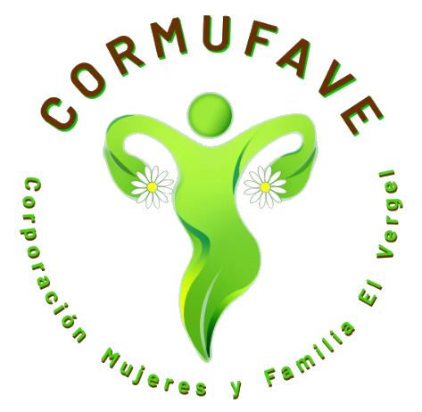
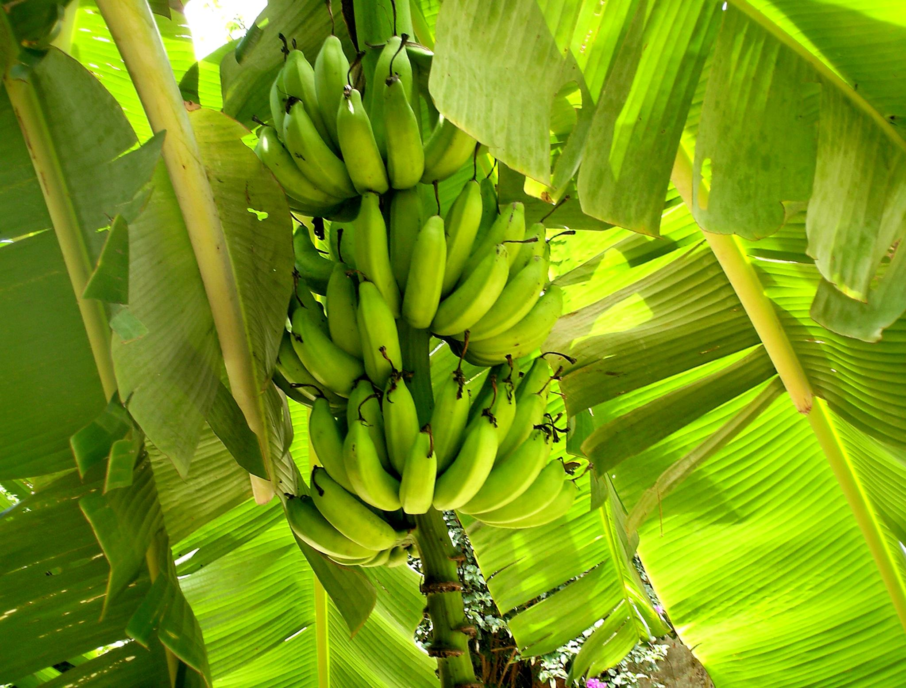
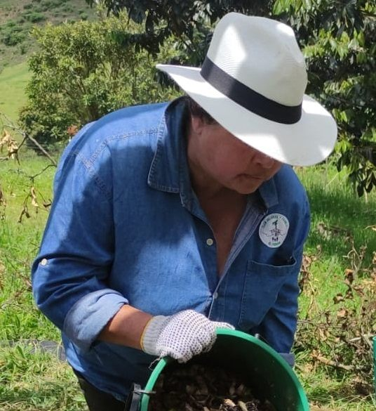

Our Mission

We are a multifaceted organization whose work is articulated around several interconnected axes: environmental sustainability, food security and sovereignty, and the integral empowerment of women. Our approach is holistic, weaving ties between our community, the environment, and economic development to build a more resilient and equitable future.
1. Environmental Axis: Agroecology and ecological awareness
We promote a harmonious relationship with our environment through education and agroecological practice.
- Organic Waste Management: To manage waste consciously, we have implemented innovative systems such as our composting center and the “pacanería”. The latter consists of digester bales installed in planters with which we demonstrate that composting is not a dirty or smelly process, but a clean and adaptable practice. By planting flowers on top, we transform this work into a pleasant sensory experience. With this system, we not only process the waste from our “Alimentarte” program, but we also receive organic waste from 18 families in the community, thus mitigating the impact on landfills.
- Education and Planting: We bring agroecology to new generations through school gardens, especially in rural schools. We understand that young people in the countryside, despite their proximity, often lack access to this education, and with this, we seek to offer them new motivations and curb migration to the city. On our own farm, we offer practical training to groups of students, teaching various techniques such as aeroponic systems, terrace planting, the “plantuladero” and the use of biodigester bales.
- Recovery of Peasant Memory: For us, environmental work is deeply linked to culture. For this reason, we carry out exchanges with peasants to recover and value the cultural and ancestral memory of planting practices, ensuring that traditional knowledge remains alive.

2. Food security and sovereignty axis
We address access to food from two fronts: security (ensuring people eat) and sovereignty (giving them the power to produce and decide on their food).
- “Alimentarte” Program: Through our program, in alliance with the FAO’s Zero Hunger strategy, we benefit 37 families monthly. We receive food donations from the main market, which we select and distribute through solidarity markets.
- Transformation and Total Utilization: We believe in zero waste. Foods that are not suitable for the market but are still consumable are used in transformation workshops. There, we teach the community to prepare jams, pickles, sauces, and compotes, adding value to the products.
- Culinary Education: To promote a varied and healthy diet, we use a WhatsApp group to share recipes, especially for little-known products. In addition, we have a mobile kitchen and give talks on healthy cooking for young people in schools.
- Promotion of Sovereignty: We actively promote “home planting”. We help women take advantage of any available space (balconies, terraces) to implement basket planting systems, allowing them to grow their own food with the resources they have at hand.

3. Education and community development axis
The core of our work is the strengthening of women, whom we consider agents of change in their families and territories.
- Economic Autonomy and Entrepreneurship: In alliance with SENA, we offer training for women who wish to start their own businesses. We provide them with the formulas, practices, and necessary knowledge. To ensure their success, we promote their participation in entrepreneurship fairs and have co-created a Solidarity Store with nine other organizations from Antioquia, a physical space where they can sell their products directly.
- Rights and Well-being: We actively work on the prevention of gender-based violence and the promotion of women’s rights. We hold fairs and training sessions that provide them with tools to empower themselves, make autonomous decisions, and ensure their well-being.
- Dignified Menstrual Health: We address a crucial but often invisible issue, especially in rural areas. We conduct talks and distribute reusable cotton sanitary pads to ensure dignified access to menstrual management products and to break down the taboos and social stigmas associated with menstruation.
- Social and Cultural Fabric: We foster community connection through crafts and planting programs. An example that fills us with pride is our “embroidered aromatic recipe book”, a project that rescues ancestral recipes passed down from grandmothers to mothers, preserving feminine memory and knowledge.
- Network Articulation: We are an active part of the Corantioquia Women’s Network, collaborating with other organizations to build ties, strengthen territories, and advocate for sustainable development that preserves our culture and environment.

In summary, at Cormufave we are not just a corporation; we are an ecosystem of support. We empower women and their families to be leaders in environmental sustainability, food security, and economic development in their communities, creating a deep and lasting impact.